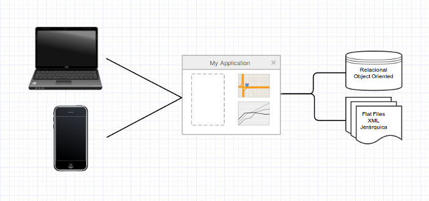
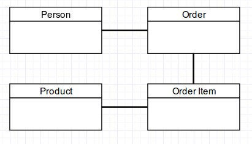

Database 101
Introducción a las bases de datos.
Por Francisco J. Fernández
PRPASS UTour
Francisco J. Fernández
- Ex-Alumno de la UMET
- Finalista Imagine Cup 2010/11
- Colaborador PRPASS
- Consultor Desarrollo/BI Nagno
Itinerario
- Introducción
- Qué es una base de datos?
- Diferentes tipos de bases de datos
- Tablas, "Keys" y Reglas de integridad
- Modelos
- Configuración de SQL Server
Datos Día a Día

- Flat Files
- Fixed
- Comma Delimited
- Jerárquica (utilizaba files con punteros)
- Orientada a Objetos
- XML
- Relacional
- New kid on the block -> Big Data
Qué es una base de datos?
Una base de datos es una estructura informática integrada compartida que almacena una colección de datos de interes para un usuario y datos sobre los datos (Metadata).
- Database Management System (DBMS)
- Lenguajes (SQL, uQL)
- Relacionales y NoSql entre otros
Relacional
- Modelo de datos fijo
- Almacena los datos en tablas, filas y columnas
- Verticalmente escalable
- Optimo para consultas complejas
- ej. Rows en una tabla
No Relacional
- No esquemas
- Almacena los datos en documentos, pares de llave-valor, etc.
- Horizontalmente escalable
- Optimo para datos jerárquicos y variables
- ej. Documento en MongoDB (JSON)
{ "_id" : ObjectId("54e2b65b406947105fd45636"), "languages" : [ "ruby", "c" ], "name" : "Johnny" } { "_id" : ObjectId("54e2b65e1cdcaf47923dc688"), "name" : "Sue", "telephone" : 7879991234 }
El Modelo Relacional
- Es basado en la teoria de conjuntos
- La relación entre elementos es basada en valores y no en orden
- Las reglas para una base de datos relacional son descritas por el negocio
- Utiliza tablas, filas y columnas para guardar los datos
Tablas

- Representan una entidad
- Conjunto de filas y columnas que representa una instancia de la entidad
- Las filas no tienen un orden especifico
- Cada fila debe tener una columna o conjunto de columnas que identifican la entidad
"Keys" y Reglas de Integridad
- Primary Key: Uno o mas campos que identifican el record unicamente
- Foreign Key: Un campo que tiene el PK de otra tabla para relacionarlo
- Business o Composite Key: Uno o mas campos que pueden identificar el record unicamente pero no es un PK
Como lo hago???
- Cuantas tablas necesito?
- Que columnas van en que tablas?
- Como se relacionan
Modelos de Datos

- Conceptual
- El más cercano al lenguaje de negocios
- Es basicamente un draft
- No esta atado un tipo de base de datos
- Exelente para demostrar el concepto al cliente
Modelos de Datos
- Lógico
- Define como van a estar los dato guardados
- Especifico para un tipo de bases de datos
- En nuestro caso relacional
- Utiliza el modelo conceptual como base
- No esta asociado a una plataforma especifica
Modelos de Datos
- Físico
- Utiliza el modelo lógico como base (a veces igual)
- Define la implementación exacta del modelo lógico
- Esta asociado a una plataforma especifica
- SQL Server en nuestro caso